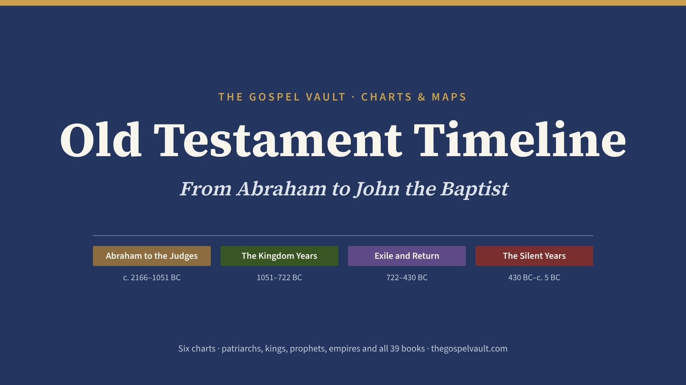

Available Now
Studies, Charts & Maps

Charts · 6 TimelinesOld Testament Timeline
The patriarchs, judges, kings, prophets and empires, and every Old Testament book placed on one timeline, from Abraham to John the Baptist.
 The Great Isaiah Scroll · about 125 BCFound at Qumran in 1947 with all 66 chapters. A thousand years older than earlier Hebrew copies, yet it reads almost word for word like ours.
Outline · 66 Chapters
The Great Isaiah Scroll · about 125 BCFound at Qumran in 1947 with all 66 chapters. A thousand years older than earlier Hebrew copies, yet it reads almost word for word like ours.
Outline · 66 Chapters
Isaiah
A chapter-by-chapter outline of Isaiah with notes and cross-references — judgment and comfort, the Suffering Servant, and the promise of the coming kingdom.
Photo: The Great Isaiah Scroll, Israel Museum, Jerusalem (public domain), via Wikimedia Commons.